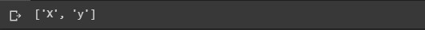
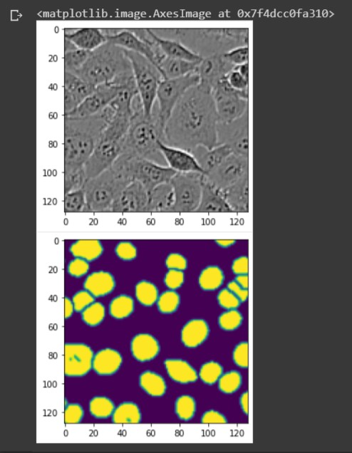
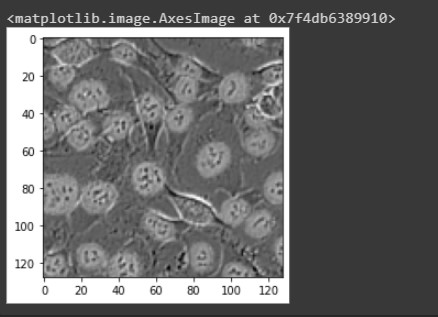
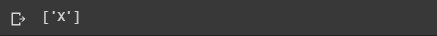
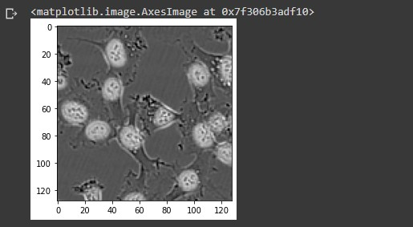
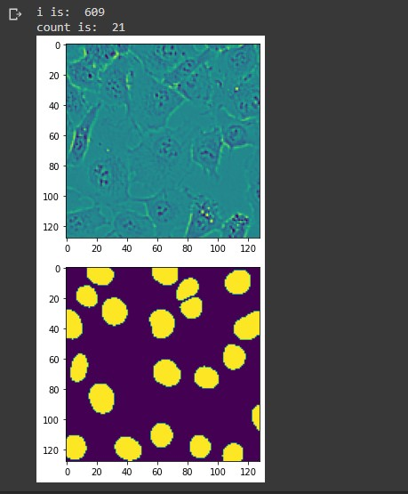
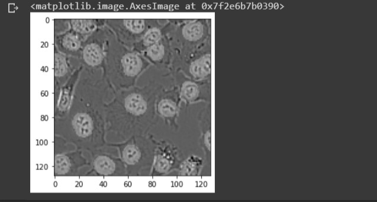
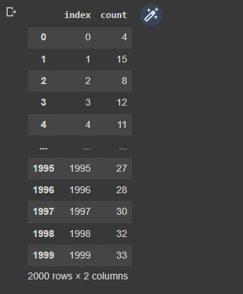

How many cells appear in a given microscopy image?
The goal for this project is to create a neural network for segmenting the cell nuclei within a microscopy image. We’ll use Python’s Tensorflow and Keras libraries to implement a U-Net architecture and train a neural network to highlight the nuclei in images of cells. We’ll then count the number of cells in each image using the cv2 library and build a pandas database to store the results. Note: You can find the accompanying code in the Colab Notebook link below. I highly encourage you to fork it, tweak the parameters, or try the model with your own dataset!
The Data
The data for this project was collected from the Schroeder lab at the University of San Francisco. The file format is a numpy .npz format which provides storage of array data using gzip compression. The link to download the raw data and test images can be found here.
Why use a U-Net?
U-Net is a convolutional network architecture for fast and precise segmentation of images. Many convolutional networks used for classification tasks output a single class label per image. However, for visual tasks like biomedical image processing, the desired output should include localization. The U-Net architecture assigns a class label to each pixel in the image, which allows us to highlight the subarea of the image representing a cell.
Setup
Using a Google Colab notebook for this project. Import libraries and load files through google drive.
# import libraries import numpy as np import matplotlib.pyplot as plt import tensorflow as tf import sklearn as sk import sklearn.model_selection import tensorflow_datasets
from google.colab import drive drive.mount('/content/gdrive') npzfile = np.load('/content/gdrive/MyDrive/X_and_y.npz')Explore the array data
npzfile.files Split the data X and y into numpy arrays. X contains the microscopy images of cells. y contains highlighting 'masks' which identify the cell nuclei.
{kind=link}
X = npzfile['X'] y = npzfile['y']
Explore the data
Check data types and numpy values for the image and highlighting mask data
# max value is 255.0 np.max(X) type(X) X.shape type(y) y.shapeX.shape returns the output (2000, 128, 128) Meaning the X numpy array contains 2000 images, each with 128 rows and 128 columns. y.shape returns the output (2000, 128, 128) meaning the y numpy array contains 2000 images with 128 rows and columns.
Lets use the matplotlib library to show an image along with the highlighted mask
idx = 7 plt.imshow(X[idx]/255, cmap = 'gray') plt.figure() plt.imshow(y[idx]) The grayscale image is X, showing the microscopy image of cells. The colored image below is y, showing the corresponding ground truth labels highlighting the cell nuclei. Let's superimpose the X image with the ground truth labels in y.
{kind=link}
idx = 7 plt.imshow(X[idx]/255 + .25*y[idx], cmap = 'gray') We see the highlighted masks surrounding the cells.
{kind=link}
Build the U-Net
Split X and y into training and test data. Then create keras dataset objects using the split data. The batch size refers to the number of samples that will be propagated through the network. The batch size for this project will be 16.X_train, X_val, y_train, y_val = sk.model_selection.train_test_split(X, y, random_state=123) data_train = tf.data.Dataset.from_tensor_slices((X_train,y_train)).batch(16) data_val = tf.data.Dataset.from_tensor_slices((X_val,y_val)).batch(16)
The U-Net architecture consists of a contracting path and an expansive path. We'll split the code for the model by these two paths.
 Contracting Path
The contracting path consists of the input layer as well as the repeated application of two 3x3 padded convolutions, each followed by a ReLU activation function and a 2x2 max pooling operation with stride 2 for downsampling. For each downsampling step we double the number of feature channels.
Create the input layer with the same shape of X (128, 128, 1). The value for the third parameter is 1 because its a gray scale image.
Contracting Path
The contracting path consists of the input layer as well as the repeated application of two 3x3 padded convolutions, each followed by a ReLU activation function and a 2x2 max pooling operation with stride 2 for downsampling. For each downsampling step we double the number of feature channels.
Create the input layer with the same shape of X (128, 128, 1). The value for the third parameter is 1 because its a gray scale image.
inputs = tf.keras.Input(shape=(128,128,1))Plug the input layer into the first 2D convolution. We'll start with 64 filters, kernal size 3x3, and apply the ReLU activation function. Make sure to make padding = 'same' to make the output layer the same size as the input. Repeat for the second layer.
# 1st 2D Conv layer x = tf.keras.layers.Conv2D(filters=64, kernel_size=(3,3), activation='relu', padding ='same')(inputs) # 2nd layer: half of these filters will be used for 4th upsampling 2D Conv layer x_skip1 = tf.keras.layers.Conv2D(filters=64, kernel_size=(3,3), activation='relu', padding ='same')(x)Apply first 2x2 max pooling operation. Plugging in the previous 2D convolutional layer.
# 1st max pooling 2x2 layer max1 = tf.keras.layers.MaxPool2D(pool_size=(2,2))(x_skip1)Double the amount of filters for the third and forth convolutional layer
# 3rd layer x = tf.keras.layers.Conv2D(filters=128, kernel_size=(3,3), activation='relu', padding ='same')(max1) # 4th layer: half of these filters will be used for 3rd upsampling 2D Conv layer x_skip2 = tf.keras.layers.Conv2D(filters=128, kernel_size=(3,3), activation='relu', padding ='same')(x)Apply second max pooling operation.
# 2nd max pooling 2x2 layer max2 = tf.keras.layers.MaxPool2D(pool_size=(2,2))(x_skip2)Double the amount of filters for the fifth and sixth convolutional layer.
# 5th layer x = tf.keras.layers.Conv2D(filters=256, kernel_size=(3,3), activation='relu', padding ='same')(max2) # 6th layer: half of these filters will be used for 2nd upsampling 2D Conv layer x_skip3 = tf.keras.layers.Conv2D(filters=256, kernel_size=(3,3), activation='relu', padding ='same')(x)Apply third max pooling operation.
# 3rd max pooling 2x2 layer max3 = tf.keras.layers.MaxPool2D(pool_size=(2,2))(x_skip3)Double the filters for the seventh and eighth convolutional layer.
# 7th layer x = tf.keras.layers.Conv2D(filters=512, kernel_size=(3,3), activation='relu', padding ='same')(max3) # 8th layer: half of these filters will be used for 1st upsampling 2D Conv layer x_skip4 = tf.keras.layers.Conv2D(filters=512, kernel_size=(3,3), activation='relu', padding ='same')(x)Apply forth (and final) max pooling operation.
# 4th max pooling 2x2 layer max4 = tf.keras.layers.MaxPool2D(pool_size=(2,2))(x_skip4)Double the filters for the ninth and tenth layer. These will be the final pair of 2D Convolutional layers for the contracting path.
# 9th layer x = tf.keras.layers.Conv2D(filters=1024, kernel_size=(3,3), activation='relu', padding ='same')(max4) # 10th layer: final layer for contracting path x = tf.keras.layers.Conv2D(filters=1024, kernel_size=(3,3), activation='relu', padding ='same')(x)Expansive Path Every step in the expansive path consists of an upsampling of filters followed by a 2x2 convolution that halves the number of filters, a concatenation with the correspondingly cropped filters from the contracting path, and two 3x3 convolutions, each followed by a ReLU activation function. The cropping is necessary due to the loss of border pixels in every convolution. We'll keep the padding parameter as 'same' so the output layer will have the same shape as the input. Create first upsampling 2D layer, plugging in the previous convolutional layer
up1 = tf.keras.layers.UpSampling2D(size=(2, 2))(x)Create 2D convolutional layer using half of the filters from the previous layer. The previous layer has 1024 filters so this layer will have 512.
up1 = tf.keras.layers.Conv2D(filters=512, kernel_size=(3,3), activation='relu', padding ='same')(up1)Concatenate the corresponding filters from the 2D convolutional layer in the contracting path.
x = tf.keras.layers.Concatenate(axis=-1)([up1, x_skip4])Now apply two 3x3 convolutional layers with half of the filters from the previous layer
# 11th layer x = tf.keras.layers.Conv2D(filters=512, kernel_size=(3,3), activation='relu', padding ='same')(x) # 12th layer x = tf.keras.layers.Conv2D(filters=512, kernel_size=(3,3), activation='relu', padding ='same')(x)Create second upsampling 2D layer
up2 = tf.keras.layers.UpSampling2D(size=(2, 2))(x)Create 2D convolutional layer. Using half of the filters from the previous layer.
up2 = tf.keras.layers.Conv2D(filters=256, kernel_size=(3,3), activation='relu', padding ='same')(up2)Repeat concatenation step using filters from corresponding convolutional layer from the contracting path.
x = tf.keras.layers.Concatenate(axis=-1)([up2, x_skip3])Apply pair of 3x3 convolutional layers with half of the filters from the previous layer.
# 13th layer x = tf.keras.layers.Conv2D(filters=256, kernel_size=(3,3), activation='relu', padding ='same')(x) # 14th layer x = tf.keras.layers.Conv2D(filters=256, kernel_size=(3,3), activation='relu', padding ='same')(x)Create third upsampling 2D layer.
up3 = tf.keras.layers.UpSampling2D(size=(2, 2))(x)Create 2D convolutional layer. Using half of the filters from the previous layer.
up3 = tf.keras.layers.Conv2D(filters=128, kernel_size=(3,3), activation='relu', padding ='same')(up3)Repeat concatenation step using filters from corresponding convolutional layer from the contracting path.
x = tf.keras.layers.Concatenate(axis=-1)([up3, x_skip2])Apply pair of 3x3 convolutional layers using half of the filters from the previous layer.
# 15th layer x = tf.keras.layers.Conv2D(filters=128, kernel_size=(3,3), activation='relu', padding ='same')(x) # 16th layer x = tf.keras.layers.Conv2D(filters=128, kernel_size=(3,3), activation='relu', padding ='same')(x)Create forth (and final) upsampling 2D layer.
up4 = tf.keras.layers.UpSampling2D(size=(2, 2))(x)Create 2D convolutional layer. Using half of the filters from the previous layer.
up4 = tf.keras.layers.Conv2D(filters=64, kernel_size=(3,3), activation='relu', padding ='same')(up4)Repeat concatenation step using filters from corresponding convolutional layer from the contracting path.
x = tf.keras.layers.Concatenate(axis=-1)([up4, x_skip1])Apply last pair of 3x3 convolutional layers using half of the filters from the previous layer.
# 17th layer x = tf.keras.layers.Conv2D(filters=64, kernel_size=(3,3), activation='relu', padding ='same')(x) # 18th layer x = tf.keras.layers.Conv2D(filters=64, kernel_size=(3,3), activation='relu', padding ='same')(x)Dropout layer: A dropout layer is an effective regularization technique for neural networks. When applied to a layer, dropout randomly sets to zero a number of output features during training. This helps prevent the model from overfitting.
# apply dropout layer by 50% x = tf.keras.layers.Dropout(0.5)(x)We want the output for our network to be one single image. So apply the filter parameter equal to 1, with kernal size (1,1). Our activation function will change to the sigmoid function to return a value between 0 and 1. We keep the padding parameter as 'same'.
outputs = tf.keras.layers.Conv2D(filters=1, kernel_size=(1,1), activation='sigmoid', padding='same')(x)
Setup and Train the Model
Use the inputs and outputs variables for the parameters of the model.model = tf.keras.Model(inputs, outputs)Create a learning rate variable for training the model. This determines the step size at each iteration while moving toward a minimum of a loss function. We want this value to be very small.
opt = tf.keras.optimizers.RMSprop(learning_rate=1e-4)Compile the model using the learning rate variable for the optimizer. Because our target values are between 0 and 1, we'll use binary crossentropy for our loss function. We'll also monitor the accuracy during training.
# compile model model.compile(optimizer=opt, loss='binary_crossentropy',metrics=['accuracy'])We'll now train the model using 50 epochs (50 iterations over all samples in the training data). At the same time, we will monitor loss and accuracy on the split data. We do so by passing the data_val variable as the validation_data argument.
# train model history = model.fit(data_train, epochs=50, validation_data = data_val)While model.fit() is running, a list of the metrics for each epoch is shown in the output.
 Note that the call model.fit() returns a History object. This object has a member 'history', which is a dictionary containing data for the metrics that were monitored during training. We can use the dictionary to visualize the training process for the model.
Note that the call model.fit() returns a History object. This object has a member 'history', which is a dictionary containing data for the metrics that were monitored during training. We can use the dictionary to visualize the training process for the model.
# plot the training and validation loss train_loss = history.history['loss'] val_loss = history.history['val_loss'] plt.plot(train_loss, label = 'training loss') plt.plot(val_loss, label = 'validation loss') plt.legend()

# plot the training and validation accuracy train_accuracy = history.history['accuracy'] val_accuracy = history.history['val_accuracy'] plt.plot(train_accuracy, label='training accuracy') plt.plot(val_accuracy, label='validation accuracy') plt.legend()
 Notice the model is slightly less accurate when making predictions on the validation data.
Notice the model is slightly less accurate when making predictions on the validation data.
Make predictions with test images
Now that our model is trained we can load the test images to make predictions and count the number of cells in each image.# load test images test_file = np.load('/content/gdrive/MyDrive/test_images.npz')
test_file.files
{kind=link}
X_test = test_file["X"]We need to convert the array file into a tensor object and change the data type to a 32-bit float.
X_test = tf.convert_to_tensor(X_test, np.float32)Now use X_test for the parameter to make predictions with our model. Save to a variable.
mask_test = model.predict(X_test)
type(mask_test)
{kind=link}
mask_test.shapeWe see that the test has 2000 prediction images, each with 128 rows and columns. All images are grayscale hence the value is 1. Lets take a look at one of the prediction images.
{kind=link}
idx = 5 img = X_test[idx].numpy() plt.imshow(img/255 + .5*mask_test[idx,:,:,0], cmap = 'gray') Notice the highlighted areas surrounding the cell nuclei indicating a cell present.
{kind=link}
Counting cells in an image
In order to use the highlighted areas to count the number of cells in an image, we need to convert the soft target labels created during the training process into hard target labels. Currently the target labels for each pixel are values between 0 and 1. We need to round each value to only be a value of 0 or 1. That way there's a clear binary classification for cells in an image. Import the connected components library, which will be used to compute the connected hard labels.import cv2Let's show a random image from the test images along with the corresponding predictive masks. Then use the rounded hard labels as a parameter for the connected components command. Remember to subtract 1 from the count to not include the background of the image.
i = np.random.randint(2000) print('i is: ', i) img = X_test[i] mask = mask_test[i,:,:,0] plt.imshow(img) plt.figure() plt.imshow(np.round(mask)) count, _ = cv2.connectedComponents(np.uint8(np.round(mask))) # Subtract 1. Don't include the background! count = count - 1 print('count is: ', count) For the image above, the connected components command counted 22 hard labels. Subtracting 1 to exclude the background, we end up with 21 hard labels indicating the number of cells in the image. You can see from the lower image there are 21 predictive masks. Lets superimpose these two images to see the predictive masks hovering over each cell.
{kind=link}
plt.imshow(img/255 + .25*np.round(mask), cmap = 'gray')
{kind=link}
Build database to store results
We can now store our predictions to a database. Lets import the pandas library and create two numpy arrays filled with 0 values. We'll use these arrays to store the index number for each image along with the corresponding cell count. The size for both arrays are equal to the mask_test array.import pandas as pd
# shape is (2000, 128, 128, 1) mask_test.shape # length of array is 2000 len(mask_test) # create two numpy arrays with zero values indexes = np.zeros(2000) counts = np.zeros(2000)We'll create a for loop that iterates through each prediction from the test to count the number of hard labels for each image. Then store the index number and count to the numpy arrays.
for i in range(len(mask_test)):Convert the arrays to integer data types.mask = mask_test[i,:,:,0] count, _ = cv2.connectedComponents(np.uint8(np.round(mask))) count = count - 1 # add index and count to arrays indexes[i] = i counts[i] = count
indexes = indexes.astype(int) counts = counts.astype(int)Create an empty pandas dataframe with column names 'index' and 'count'.
results = pd.DataFrame(columns=["index","count"])Transfer the array data to the corresponding columns in the dataframe.
results['index'] = indexes results['count'] = countsA view of the dataframe.
results We can now export our dataframe to a csv file.
{kind=link}
from google.colab import files results.to_csv('U-Net Project Results.csv', encoding = 'utf-8-sig', index=False) files.download('U-Net Project Results.csv')
Get In Touch
seansanchez951@gmail.com